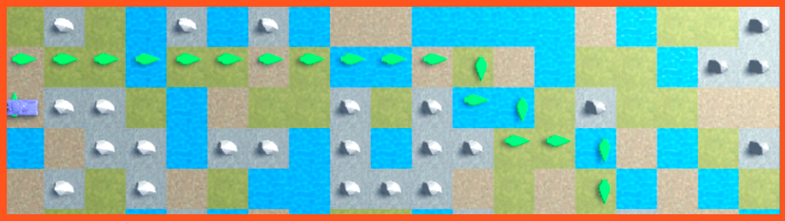

A*
In this case we find a project made with Unity3D for the Artificial Intelligence course .
In it, the well-known A* algorithm is used to search for paths with three different euristics (Manhattan, Chebyshev and an inefficient euristic).
To see its functionality, we must click on the tank that will be in a random position on a random map or that we can generate.
All the elements of the map are interchangeable, that is, you can modify the state of the map to change the route that the tank will follow to reach its objective.
We have four different types of soil through which the tank can pass, which are: grass, mud, water and stone.
Each one has a higher cost than the previous one and the stones cannot be crossed, so the route will be canceled.
Game Images
How to install?
Just download de .zip file, extract all the files in the same folder, double click on IAVP1G05.exe file.